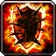
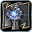
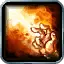
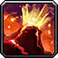
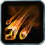

Warlock – Destruction PvP
Warlock – Destruction PvP
PvP Split 0 / 13 / 38 (Affliction / Demonology / Destruction)
Bursty Fire Destruction for PvP, with Molten Skin damage reduction, Intensity against pushback, Pyroclasm stuns and Demonology for Stamina and Sayaad control.
Talents in this build
Hover or tap a talent to see what it does at that rank.
Demonology · 13
- Demonic Embrace 5/5
- Demonic Aegis 2/2
- Fel Vitality 3/3
- Improved Sayaad 3/3
Destruction · 38
- Bane 5/5

Molten Skin 5/5- Aftermath 5/5
- Ruin 5/5

Shadowburn 1/1- Intensity 3/3
- Agonizing Flames 3/3

Conflagrate 1/1
Pyroclasm 2/2
Fire and Brimstone 3/3- Shadow and Flame 5/5
Leveling order
level 10 → 60
One talent point per level from 10 to 60. Press play to watch the build fill in, or switch to Text for the list.
| Level | Talent | Tree |
|---|---|---|
| 10 | Demonic Embrace 1/5 | Demonology |
| 11 | Demonic Embrace 2/5 | Demonology |
| 12 | Demonic Embrace 3/5 | Demonology |
| 13 | Demonic Embrace 4/5 | Demonology |
| 14 | Demonic Embrace 5/5 | Demonology |
| 15 | Demonic Aegis 1/2 | Demonology |
| 16 | Demonic Aegis 2/2 | Demonology |
| 17 | Fel Vitality 1/3 | Demonology |
| 18 | Fel Vitality 2/3 | Demonology |
| 19 | Fel Vitality 3/3 | Demonology |
| 20 | Improved Sayaad 1/3 | Demonology |
| 21 | Improved Sayaad 2/3 | Demonology |
| 22 | Improved Sayaad 3/3 | Demonology |
| 23 | Bane 1/5 | Destruction |
| 24 | Bane 2/5 | Destruction |
| 25 | Bane 3/5 | Destruction |
| 26 | Bane 4/5 | Destruction |
| 27 | Bane 5/5 | Destruction |
| 28 | Molten Skin 1/5 | Destruction |
| 29 | Molten Skin 2/5 | Destruction |
| 30 | Molten Skin 3/5 | Destruction |
| 31 | Molten Skin 4/5 | Destruction |
| 32 | Molten Skin 5/5 | Destruction |
| 33 | Aftermath 1/5 | Destruction |
| 34 | Aftermath 2/5 | Destruction |
| 35 | Aftermath 3/5 | Destruction |
| 36 | Aftermath 4/5 | Destruction |
| 37 | Aftermath 5/5 | Destruction |
| 38 | Ruin 1/5 | Destruction |
| 39 | Ruin 2/5 | Destruction |
| 40 | Ruin 3/5 | Destruction |
| 41 | Ruin 4/5 | Destruction |
| 42 | Ruin 5/5 | Destruction |
| 43 | Shadowburn 1/1 | Destruction |
| 44 | Intensity 1/3 | Destruction |
| 45 | Intensity 2/3 | Destruction |
| 46 | Intensity 3/3 | Destruction |
| 47 | Agonizing Flames 1/3 | Destruction |
| 48 | Agonizing Flames 2/3 | Destruction |
| 49 | Agonizing Flames 3/3 | Destruction |
| 50 | Conflagrate 1/1 | Destruction |
| 51 | Pyroclasm 1/2 | Destruction |
| 52 | Pyroclasm 2/2 | Destruction |
| 53 | Fire and Brimstone 1/3 | Destruction |
| 54 | Fire and Brimstone 2/3 | Destruction |
| 55 | Fire and Brimstone 3/3 | Destruction |
| 56 | Shadow and Flame 1/5 | Destruction |
| 57 | Shadow and Flame 2/5 | Destruction |
| 58 | Shadow and Flame 3/5 | Destruction |
| 59 | Shadow and Flame 4/5 | Destruction |
| 60 | Shadow and Flame 5/5 | Destruction |